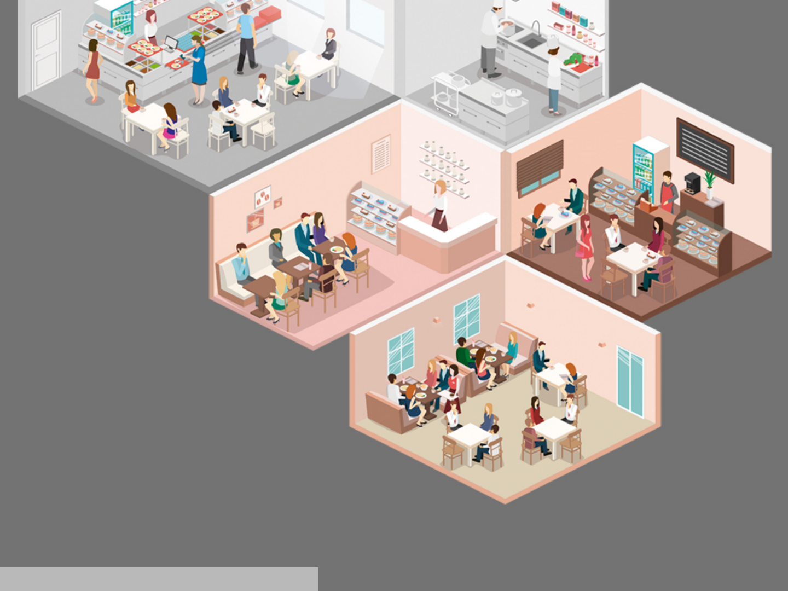
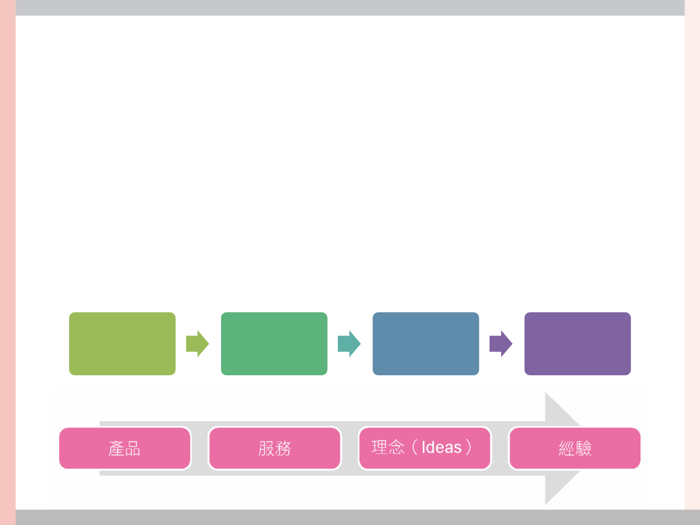
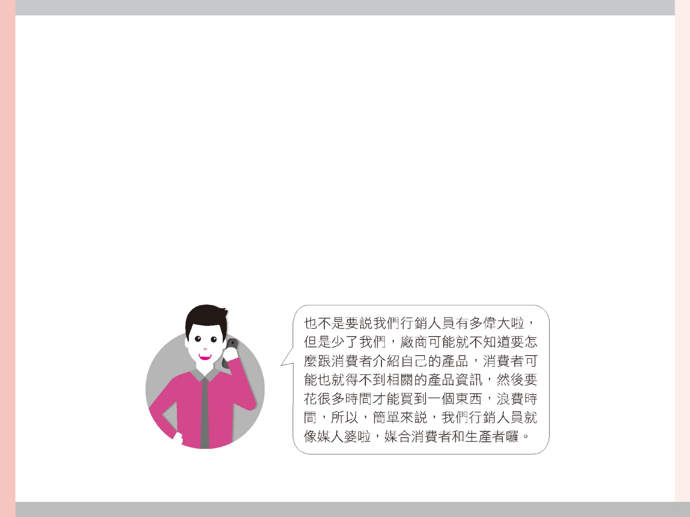
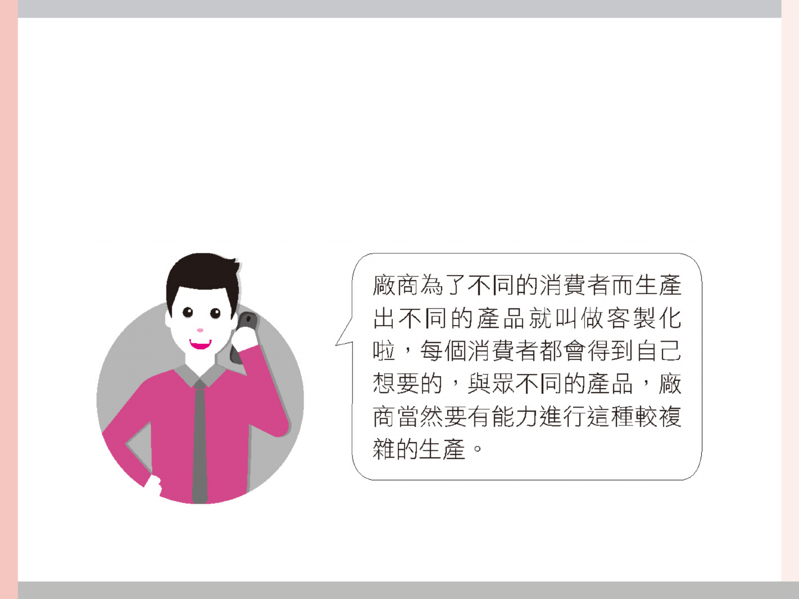
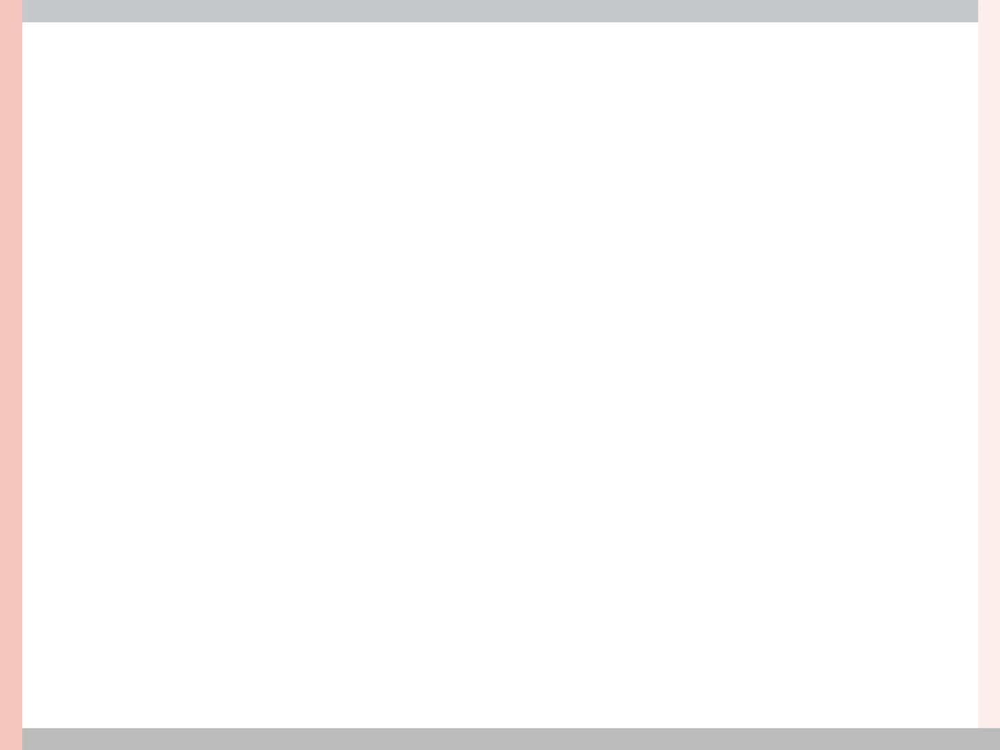
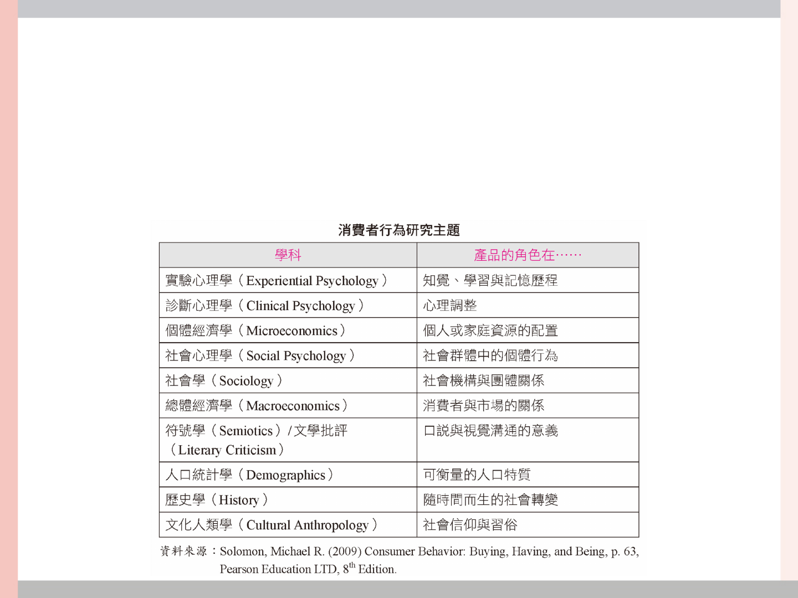

第1章
市場中的消費者
是誰人家？
授課教師：
解析消費者行為．謝明慧、吳淑玲著．前程文化出版

引導思考案例
• 我們每個人都可能是消費者，而我們更是透
過不同的「消費歷程」，去建構自己獨特的
生活型態，因而每個人都擁有著不同的消費
者行為（Consumer Behavior）。

單元1 難以捉摸你的心──多元消
費者群像
• 消費者行為（Consumer Behavior）
- 意指單一個體的消費者或一群消費者透過選擇、
購買、使用及處置產品、服務、理念（Ideas）
和經驗來滿足自身需求及欲求的整個涉入過程。
選擇 購買 使用 處置

單元2 沒那麼簡單──消費三階段
• 行銷人員的角色
- 消費者代表市場中的需求方，廠商為供給方，
而行銷人員往往扮演需求方與供給方的中間溝
通橋樑。

單元3 難以抗拒你容顏──消費者
與行銷一線牽
• 需求V.S.想望
- 是人與生俱來的本能
- 行銷人員無法創造「需求」
• 想望（Want）
- 消費者對商品的渴望
- 想望會受文化、性格與生活型態等因素的影響

單元4 個人化與客製化
• 客製化

單元5 黑暗消費者
• 消費者的恐怖主義（Consumer Terrorism）
– 消費者對店家心生不滿，挾怨報復，做出一些不
理性行為使廠商聲譽受損
– 2005 年毒蠻牛千面人事件
• 非法活動（Illegal Activities）
– 消費者為了私利，可能無心有心地去從事一些非
法行為
– 非法下載、盜版

單元6 虛擬消費者
• 網路新消費
– 虛擬消費（Virtual Consumption）
– 消費者彼此之間的交易（Customer to Customer,
C2C）
– O2O(Online to Offline)

單元7 我要讓你知道─消費者行為
研究
• 消費者行為研究之範圍